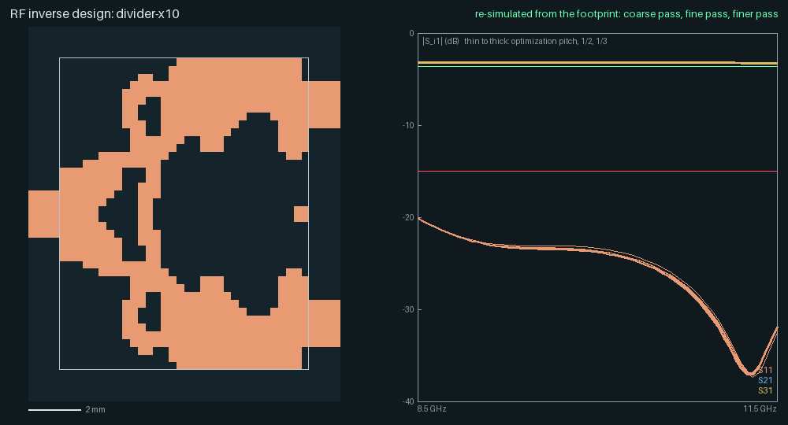
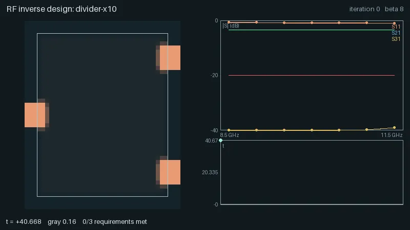
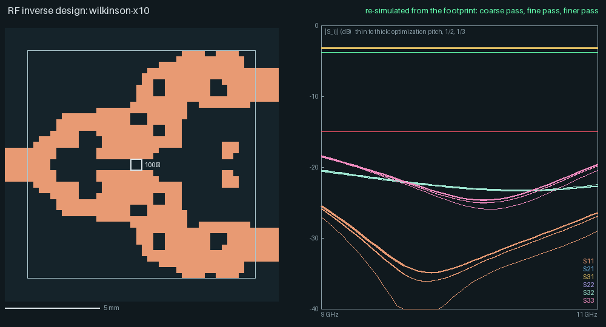
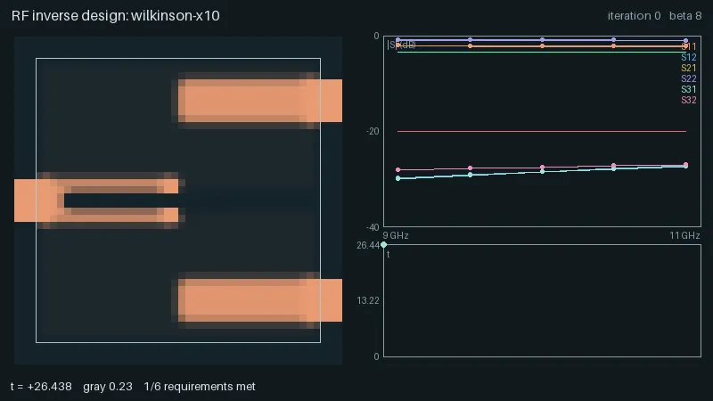
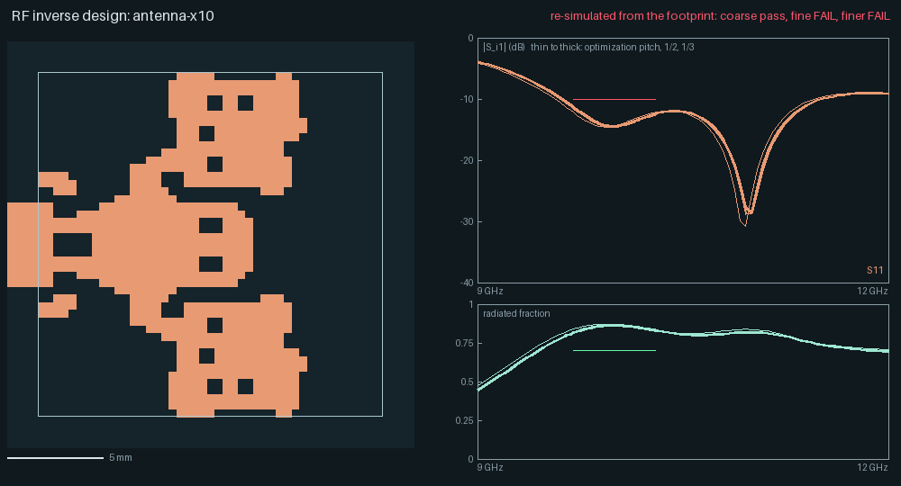
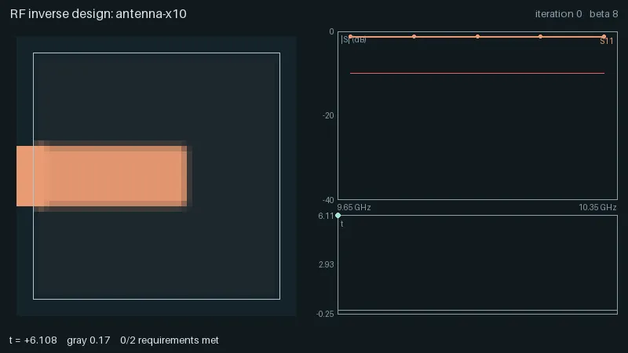
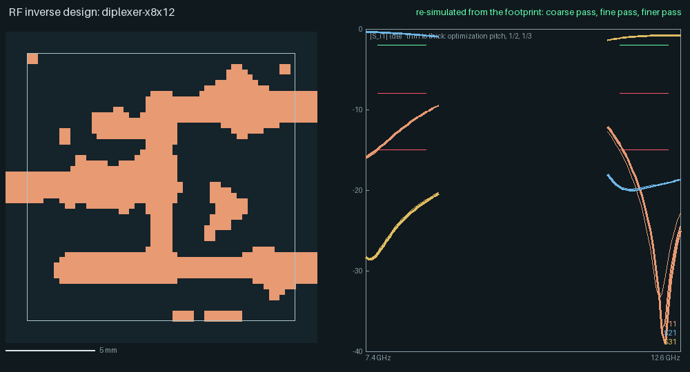
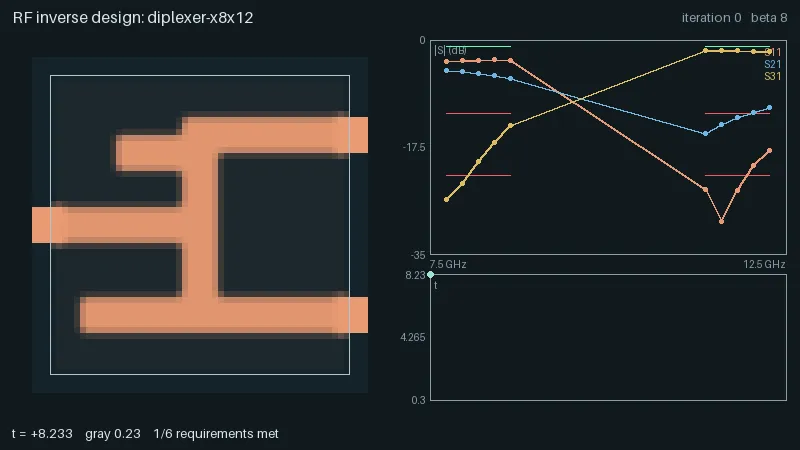
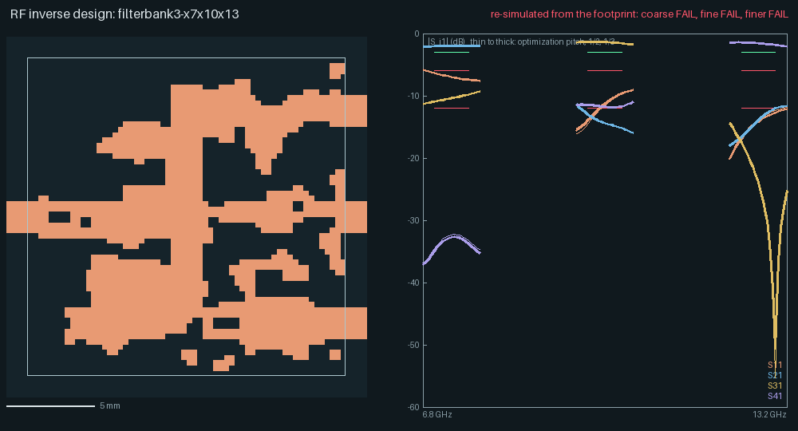
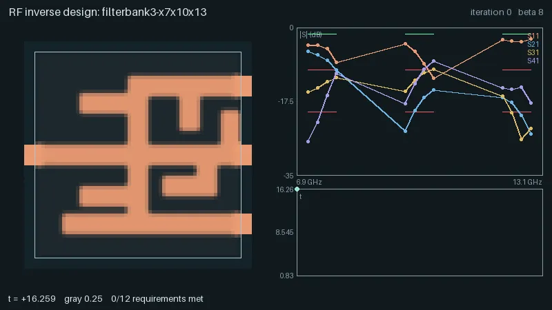

RF inverse design¶
yapnr.rf designs the copper of a single-layer microstrip footprint so that it meets a list of
transfer-function targets: |S_ij| limits and masks over frequency bands, phases, and a radiated
fraction for antennas. It follows the density-based topology optimization of Hammond et al.
(Meep’s adjoint method): an FDTD solver with exact frequency-domain adjoint gradients, a filtered
and projected density on the copper plane, and an epigraph minimax solved by MMA. The result is
a KiCad footprint, a Touchstone file and a JSON report. The method and its choices are in the
design (issue #29).
Status: the solver, the optimizer and five end-to-end cases are implemented. Re-simulated from their exported footprints on the optimization grid and on two finer grids (now the same copper on every grid), three meet all their criteria: the power divider, generated from a uniform start; the Wilkinson-type combiner, whose topology the seed and two keepout strips impose and whose shapes the optimizer chose; and the diplexer, a closed-form stub filter refined by the optimization (77 % of its copper is the seed’s). The antenna, whose copper the optimizer grew from the feed line alone, meets |S11| ≤ −10 dB and η ≥ 0.7 over 9.7–10.3 GHz on all three grids but fails the 4 % power-balance check at 9.7 GHz on the two finer grids (4.6 and 4.7 %; below). The three-channel bank, also a refined stub filter, does not meet its criteria: the adjacent channels still leak (channel A at port 3 −9.8 dB and channel B at port 4 −11.4 dB against −12 dB on the finer grids). The results and the reasons are below; what the numbers are worth is in accuracy.
Since then the radiated fraction is measured by a closed box with modal port waves (the 4 % power-balance failures were the old box’s and the V/I port’s bookkeeping, not an energy error; design §25), and antennas can be specified by their far field on a finite board: gain, beam width, front-to-back ratio, cross-polarization, efficiency and a target radiation density (antennas). The published antenna’s numbers below were measured before that change and have not been re-validated.
A spec¶
A spec is YAML or JSON (yapnr-rf-spec/1, lengths in mm, frequencies in GHz):
schema: yapnr-rf-spec/1
name: divider-x10
stackup: { er: 3.55, tan_delta: 0.0027, h_mm: 0.813, f_ref_ghz: 10 }
grid: { pitch_mm: 0.3, substrate_cells: 4 }
design_region: { x_mm: [0, 9.6], y_mm: [-6.0, 6.0] }
symmetry: mirror_y
rules: { min_width_mm: 0.6, min_space_mm: 0.6 }
ports:
- { n: 1, side: W, at_mm: 0.0, width_cells: auto }
- { n: 2, side: E, at_mm: 4.2, width_cells: auto }
- { n: 3, side: E, at_mm: -4.2, width_cells: auto }
bands:
pass: { ghz: [8.5, 11.5], points: 7 }
requirements:
- { s: [1, 1], max_db: -20, band: pass }
- { s: [2, 1], min_db: -3.4, band: pass }
- { s: [3, 1], min_db: -3.4, band: pass }
optimizer: { betas: [8, 16, 32, 64, 128], iterations_per_beta: 30, budget_min: 45 }
Ports are line ports: a feed strip enters the design region on side
W,E,SorNatat_mm(the transverse position of its centre) and runs into the absorbing boundary.width_cells: autopicks the whole number of cells whose calibrated impedance is closest to 50 Ω. Their waves come from the feed’s mode (solver.port_extraction: modal, the default;vikeeps the voltage and current samples, accuracy). On a board model the ports are lumped ({n: 1, kind: lumped, x_mm: [a, b], y_mm: [c, d], ohms: 50}, below).Requirements:
max_db,min_db,between_db: [lo, hi], piecewise-linear masksmask_db: [[f, dB], ...](upper) andmin_mask_db(lower),phase_degwithtol_deg(engineering e^{+jωt} convention),{radiated: j, min: η}for the fraction of the power incident at port j that leaves a closed box around the design region other than along the feeds (on a board model: the radiated power, the total efficiency),{absorbed: j, element: R1, min: a}for the fraction a lumped resistor dissipates, and{loss: j, max: l}for the fraction that leaves neither through a port nor into a lumped resistor (radiation and the copper’s and substrate’s dissipation, gray copper’s included). On a board model also the pattern requirements:gain,ripple,hpbw,front_to_back,cross_pol,shapeandefficiency(below). Every requirement names a band and may set itsscale(the normalization of its violation).Optional sections:
fixed(rectangles of fixed copper or keepout),lumped(resistors across a gap, such as a Wilkinson divider’s isolation resistor: the body rectangle stays void and carries the resistance between two copper pads),radiation(the radiated-power box:clearance_cells, default 2, and optionallyoffset_mmandheight_mm; the feed-window keys of round 2 are an error),board,far_fieldandpatterns(a board model and its pattern targets, below),solver(backend, precision, tolerances,edge_correction,port_source: modeandport_extraction, accuracy) andoptimizer: the β schedule, iteration caps, budget, move limits,conservative(CCSA steps that never raise t),adaptive_move(steps that raise t by more thantrust_slackare refused and retried with half the move;trust_reference: bestmeasures the slack from the β epoch’s best t with a slack shrinking as β grows, so that accepted steps cannot creep upward one slack at a time),seed(star,stubs,feeds,patch,patch_edge, or a uniforminit),binary_every(how often the binarized design is evaluated, below),eta_variants(robust optimization over eroded and dilated designs, Hammond et al. §5.3;robust_from_beta: from that β on),adaptive_from_beta(adaptive moves from that β on, plain MMA before),interpolation(resistiveorreactivegray copper, below),epoch_objectives(per β epoch,specorradiation: the band-averaged log(1 + R̄) − log η̄ of a radiating port, the objective of Lu, Wadbro, Hassan et al., which grows a radiator rather than an absorber from a gray start) andepoch_frequency_scale(per β epoch, a factor on the objective frequencies: frequency continuation). Binarized designs are always judged by the spec at its own frequencies.
The Python API mirrors the file:
from yapnr.rf.spec import Absorbed, Loss, S, RadiatedFraction, Spec
spec = Spec.load("divider.yaml")
extra = S(2, 1).phase_deg(-90, tol=10, band="pass")
antenna_target = RadiatedFraction(1).at_least(0.7, band="main")
wilkinson_resistor = Absorbed("R1", 2).at_least(0.4, band="pass") # the resistor's share
lost = Loss(2).at_most(0.08, band="pass") # radiated and dissipated outside resistors
Antennas: the radiated fraction, boards and patterns¶
The radiated fraction. {radiated: j, min: η} is measured by a box closed by the ground
around the design region (radiation: {clearance_cells: 2}): the power leaving it, plus the
guided waves the feeds carry in and out (separated by projecting on their modes), over the
incident power. It does not depend on the box’s size beyond the feed’s own loss inside it. On
the infinite substrate of the default model this is the non-guided fraction: the
substrate’s surface wave never leaves any closed surface, so it counts as radiated (0.27 of a
half-wave patch’s power on S2 at 10 GHz by the closed form; the result and validation reports
state it under assumptions). The validator checks it against the closed box’s discrete
Poynting identity (0.5 %) and the port’s incident power against a run with an empty design
region (1e-3). Design §25 has the audit that led here.
Board models. A board section puts the whole board in the simulation: a substrate block of
the board’s outline and thickness_mm, a ground on the plane stackup.h_mm below the copper
(its outline less keepout rectangles) or ground: infinite (a PEC floor under everything),
air on every side and absorbing boundaries beyond. Its ports are lumped: Ez columns from the
ground to the copper on the grid nodes inside the port’s rectangle, each standing on ground.
board.copper adds fixed top copper outside the design region, such as the feed from a port at
the board’s edge. A closed box in air around the board then measures the radiated power
exactly, radiated becomes the total efficiency, and the box’s fields give the far field.
# The 5.8 GHz printed omni antenna (docs/rf/antenna-omni-5g8/spec.json, abridged)
stackup: { er: 4.3, tan_delta: 0.02, h_mm: 0.246, f_ref_ghz: 5.8 } # L1 over L2
grid: { pitch_mm: 0.25, substrate_cells: 2 }
design_region: { x_mm: [-14.5, 14.5], y_mm: [0.5, 13.5] } # the ground clearance
symmetry: mirror_x
ports:
- { n: 1, kind: lumped, x_mm: [-0.25, 0.25], y_mm: [0, 0], ohms: 50 }
board:
x_mm: [-15, 15]
y_mm: [-46, 14]
thickness_mm: 1.6
ground: { x_mm: [-15, 15], y_mm: [-46, 0] } # or keepout: [{x_mm, y_mm}, ...]
copper: [{ x_mm: [-0.25, 0.25], y_mm: [-0.5, 0.5] }]
far_field: { frame: { axis: '+y', zero: '+x' } } # θ from +y, φ from +x
patterns:
omni: { preset: omni, axis: '+y', hpbw_deg: 90 }
requirements:
- { s: [1, 1], max_db: -12, band: match }
- { gain: 1, min_dbi: -1, directions: { cut: { theta_deg: 90, points: 12 } }, band: pattern }
- { ripple: 1, max_db: 5, directions: { cut: { theta_deg: 90, points: 36 } }, band: pattern }
- { radiated: 1, min: 0.6, band: pattern }
- { shape: 1, target: omni, max_rms_db: 3, band: pattern }
Pattern requirements (each names the excited port, a band, and directions in
far_field.frame or its own frame):
Requirement |
Bounds |
|---|---|
|
realized gain (default), |
|
the spread (smooth max − smooth min) of the level over the directions |
|
the half-power beam width along a cut, at least b1 and at most b2 |
|
the level in |
|
cross- over co-polar level (Ludwig-3 about the reference azimuth) |
|
the pattern against a target density: Kullback–Leibler divergence or mean square dB error, either read as an RMS dB error |
|
radiated over accepted ( |
max_rms_db reads as an RMS dB error (both forms) only for small deviations from the target; it
under-penalizes excess radiation where the target density sits at its floor_db, since the error
there is bounded by the floor rather than growing with the excess. Add form: log_l2, weight: uniform when sidelobe or off-axis radiation also needs suppressing, not just the shape’s bulk.
pol is total (default), co, cross (Ludwig-3), theta, phi, rhcp or lhcp (IEEE
sense). Directions: {point: {theta_deg, phi_deg}}, {cut: {theta_deg: 90, points: 12}} (a
conical cut), {cut: {phi_deg: 0, theta_deg: [-90, 90], step_deg: 5}} (an elevation cut;
negative θ is the far side), {cone: {toward: "-z", half_angle_deg: 60, step_deg: 15}},
upper and sphere. Targets: {preset: beam, toward, hpbw_deg: h or [h_E, h_H], e_plane_phi_deg, back_db} (broadside, endfire or a fan beam), {preset: omni, axis, hpbw_deg: h or "dipole", tilt_deg}, a {grid: {theta_deg, phi_deg, dbi}} table or {sh: {lmax, coef}}
(real spherical harmonics of the power density); each is floored at floor_db (−20 dB below
its peak) and normalized to 4π.
Each direction is a separate term of the minimax, so the optimizer raises the worst direction
(it fills an omni pattern’s nulls) rather than the average. Realized gain is the default
because directivity and shape alone can be bought with lossy gray copper; the problem warns
when a shape or directivity requirement has no gain or efficiency floor on its port, when a
target peaks above what a box of its size can radiate (Harrington’s (ka)² + 2ka), and when a
grid or harmonic target does not integrate to 4π. Over an infinite ground the far field exists
above it only. Every term has an exact adjoint gradient (the far field is a linear map of the
box’s fields), at a cost of about 0.2–1 s per evaluation against tens of seconds of FDTD.
result.json reports per port the peak directivity and realized gain, their direction, the
efficiencies and the far field’s power check (far_field). Design §26 has the method and its
measurements. Not yet: several ground layers, vias, the ground as a design layer, and port
pads in a board design’s KiCad footprint.
Running a design¶
from yapnr.rf.driver import design
from yapnr.rf.spec import Spec
result = design(Spec.load("divider.yaml"), "runs/divider")
The run directory holds spec.json, checkpoint.npz, history.json (t, every objective, the
S-parameters, the radiated fraction and the gray level per iteration), frames.npz (ρ̄ per
iteration), footprint.kicad_mod, coarse.sNp (the binary design on the optimization grid,
every port excited, renormalized to 50 Ω) and result.json (yapnr-rf-result/1: solver
settings, optimizer summary, achieved values, the width and space check and provenance). A run
that stops resumes from its checkpoint and reproduces the uninterrupted run bit for bit. The
solver steps the fields with its native kernel, float64, where the library loads (the yapnr
wheel and the container image carry it, Bazel builds it, and a checkout builds it with
python -m yapnr.rf.fdtd.native_kernel build), and with the numpy reference otherwise: the same
values, 13–42 times slower (solver backends). The first simulation
says on stderr which one runs. Runs use the spec’s 4 threads (YAPNR_RF_THREADS sets the native
pool); on a shared machine start them with nice -n 10. Set OPENBLAS_NUM_THREADS=1 (the Bazel
targets do): numpy’s OpenBLAS, which evaluates the adjoint sources each step, otherwise keeps
its own threads spinning beside the stepper’s (with torch’s 4 threads an adjoint run used about
7 cores and took 1.6 times as long: 46.6 s against 28.3 s on the antenna’s grid).
The exported design is the best binarized one of the run, not the last iterate: the loop
evaluates the binarized design (β = ∞ after the width and space repair; one forward run per
excitation) at the start, at every β change and every binary_every iterations (5), finish
evaluates the last one, and the lowest epigraph value wins; result.json records the iteration
it came from (optimizer.export_iteration). Plain MMA can raise t from one iteration to the next
and the value at finite β is not the binary design’s, so the last iterate is not always the
best.
The density evolution renders as an animation (Pillow, like the place-and-route animations):
bazel run //yapnr/rf:animate -- runs/divider --out divider.webp
Multi-start¶
A spec’s top-level starts key (not optimizer.starts, so a plain run’s optimizer never reads
it) runs the same design from several starting points — varied move, move_late, init,
seed, or a new deterministic perturbation of x0 — and keeps the best one by the case’s own
pass criteria, mirroring pnr.mc.halving’s mechanical Monte Carlo selection:
starts:
vary:
move: [0.20, 0.18, 0.19, 0.21, 0.22]
combine: zip # zip (lists of length n or 1) | product
halving: # optional; omitted runs every start to the end
rungs: [{ after_epoch: 0, keep: 0.5 }, { after_epoch: 1, keep: 0.5 }]
min_keep: 2
select:
criteria: case # case | spec | path of a criteria file
quantum_db: 0.001
yapnr.rf.multistart.derive_starts builds each start’s Spec (the base spec with starts
stripped, plus that start’s overrides) and refuses anything the design calls out: an unknown
vary key, start 0 not equal to the base, two starts with the same design sha256 (the native
path is deterministic, so a duplicate would only recompute an identical run), or a halving rung
at or past the schedule’s last epoch (it would be silently skipped). Optimizer.run(until_epoch=)
is the pause primitive halving needs: it stops once state.epoch >= until_epoch, before the
next iteration, without touching anything else in state, so resuming with a later or None
until_epoch continues exactly as an uninterrupted run would.
Perturbation (optimizer.perturb_amplitude, optimizer.perturb_seed; both 0 by default, and
left out of Spec.to_dict/the hash at their defaults, so no existing preset’s hash moves) adds
perturb_amplitude·(2u − 1) to x0 after the seed or init, clipped to [0, 1]; u is a
counter-based SplitMix64 draw on (perturb_seed, dof index) (yapnr.rf.multistart.perturb), not
numpy’s Generator, so it is the same on any numpy version or machine. A nonzero perturb_seed
with perturb_amplitude at 0 does nothing (derive_starts refuses it, rather than silently
spending N× the compute of one real run). See docs/design/rf-multistart.md for the halving
rung ranking, final selection rule and the replication evidence behind making halving opt-in.
Successive halving’s rung ranking and the final-selection rule, the per-start execution (local
subprocesses or cloud waves) and a CLI entry point are not implemented yet; a spec with no
starts key is unaffected (one run, today’s behavior).
End-to-end cases¶
Five cases exercise the whole method on the common tasks: a power divider and a Wilkinson-type
combiner, an antenna, and two filter banks (a diplexer and a three-channel bank). Each
optimizes its spec from its starting point (below), exports the
best binarized design of the run (width and space repaired on the pixel grid) as a footprint,
and is then re-validated from the exported .kicad_mod (not from the optimizer’s arrays) on
three grids:
on the optimization grid (“coarse”): the footprint must reproduce the exported design pixel for pixel and stay within 0.5 dB (transmissions) and 0.05 in |S| of the optimizer’s evaluation of it;
at half the pitch (“fine”) and at a third of it (“finer”): with 1.5 and 2 times the substrate cells, the feeds recalibrated from the pad widths, every port excited, S = B A⁻¹, renormalized to 50 Ω. The fine criteria apply on both, and the report lists every check’s trend over the three grids (accuracy: resonant designs are not converged).
The criteria are judged on dense in-band sweeps and are slightly looser on the finer grids than
on the coarse one (design §11). The antenna also has a power balance check (the port’s net
input power against the flux out of a box closed by the ground and the dissipation inside,
within 4 %), which validates the radiated fraction it is judged by. The presets, criteria and
the runner are in yapnr.rf.cases (python -m yapnr.rf.cases criteria CASE prints the
criteria); the validator is yapnr.rf.validate.
# optimize, export and re-validate (4 threads; start it niced on a shared machine)
export OPENBLAS_NUM_THREADS=1
python -m yapnr.rf.cases run divider --out runs/divider
python -m yapnr.rf.cases validate divider --out runs/divider # re-validate only
python -m yapnr.rf.animate runs/divider --out divider.webp --figure divider.png
# the same as Bazel tests: the full cases are manual, the smoke variants run in CI
nice -n 10 bazel test --config=lowmem --local_test_jobs=1 //tests/e2e/rf:test_divider
bazel test //tests/e2e/rf:test_divider_smoke
YAPNR_RF_RUN_DIR (passed with --test_env) keeps a full test’s run directory; a finished run
there is only exported and re-validated again. The smoke variants run the same topologies on
tiny grids for four iterations and check the pipeline, not the RF targets.
All cases use a substrate of εr 3.55 and tan δ 0.0027 (a Rogers 4003C-like laminate; S1 0.813 mm, S2 1.524 mm) over a solid ground, copper as a sheet with the surface resistance of smooth copper at 10 GHz, 50 Ω feeds (6 cells on S1, Z_c 52.7 Ω with the round-2 solver, 49.5 Ω without it; 11 cells on S2, 47.5 Ω), the V/I planes 6h from the reference plane and the source, torch float32 on 4 threads (the runs below were made before the native kernel; the presets now run native float64, 4–6 times faster). Times are wall times on the development Mac (Apple silicon), niced, next to other work.
Case |
Ports, substrate |
Optimization grid (cells, Δt) |
Fine, finer cells |
Window (pixels) |
Start (seed copper in the export) |
Iterations, wall time |
Coarse |
Fine |
Finer |
|---|---|---|---|---|---|---|---|---|---|
3, S1 (h 0.813 mm) |
124 × 74 × 22 = 202k, 0.401 ps |
689k, 1.62M |
32 × 40 @ 0.3 mm |
uniform 0.3, robust |
70, 131 min |
pass |
pass |
pass |
|
3 + 100 Ω, S1 |
132 × 74 × 22 = 215k, 0.401 ps |
738k, 1.74M |
40 × 40 @ 0.3 mm |
feeds + keepouts (the topology given, 36 % seed) |
75, 108 min |
pass |
pass |
pass |
|
1, S2 (h 1.524 mm) |
121 × 81 × 27 = 265k, 0.524 ps |
957k, 2.13M |
45 × 45 @ 0.4 mm |
feed line, robust |
60, 109 min |
pass |
fail¹ |
fail¹ |
|
3, S1 |
142 × 84 × 22 = 262k, 0.401 ps |
967k, 2.22M |
50 × 50 @ 0.3 mm |
stubs (closed-form stub filter refined, 77 % seed) |
36, 97 min |
pass |
pass |
pass |
|
4, S1 |
152 × 94 × 22 = 314k, 0.401 ps |
1.19M, 2.75M |
60 × 60 @ 0.3 mm |
stubs (closed-form stub filter refined, 75 % seed) |
60, 159 min |
fail |
fail |
fail |
¹ The power-balance check (4.6 and 4.7 % against 4 %); |S11| and η pass on every grid.
Each re-validation re-simulates every excitation on the three grids (the antenna also runs the power balance). With the copper-edge correction the three grids have 0.401, 0.216 and 0.147 ps steps on S1 (0.465, 0.265 and 0.184 ps without it) and 0.524, 0.284 and 0.194 ps on S2 (round 2 as run: 0.410, 0.222, 0.151 and 0.535, 0.291, 0.199 ps; design §24.4); the re-validations after the review took 2.4–12 minutes on the fine grid and 8–39 on the finer one (three threads, the shared Mac’s load up to 27 setting the upper ends; round 1: 2–3 and 5–15 minutes).
One iteration is one forward and one adjoint FDTD run per excitation (the eroded and dilated variants triple it, from β = 16 in the divider, the combiner and the bank and throughout in the diplexer and the antenna, and adaptive moves add a forward run per refused step), plus forward runs of the binarized design and its variants every five iterations.
The artifacts of each case are in docs/rf/: the footprints form one KiCad library,
yapnr-rf-examples.pretty; each case directory holds
spec.json, result.json (yapnr-rf-result/1), validation.json (the three
re-simulations with the criteria, the |S| tables, the trend and, for the antenna, the power
balance), coarse.sNp (the exported design on the optimization grid, 101 points over the source
band), fine.sNp and finer.sNp (the finer re-simulations at the validation frequencies), the
animation of the optimization and the figure.
(a) Power divider¶


Three ports on S1 (h 0.813 mm), a 9.6 × 12 mm window (32 × 40 pixels at 0.3 mm, mirror symmetric about y = 0), port 1 on the west edge and ports 2 and 3 on the east edge 8.4 mm apart. Targets over 8.5–11.5 GHz (7 points): |S11| ≤ −20 dB and |S21|, |S31| ≥ −3.4 dB. Round 2 (design §23): the round-2 solver (accuracy), the dilated and eroded designs in the epigraph from β = 16 (projection thresholds 0.45 and 0.55, because the finer grids see the copper differently), plain MMA steps for the 30 iterations at β = 8 and adaptive moves from β = 16, schedule 30, 15, 15, 10 iterations at β = 8, 16, 32, 64 from a uniform x = 0.3. The exported design is iteration 40’s (β = 16, robust binarized t −0.028; the last design’s +0.066); 70 iterations in 131 minutes on the shared Mac (22 s to 18 minutes per iteration as the machine’s load rose from 8 to 29).
Check (dense sweep, 61 points) |
Target |
Criterion (coarse; fine and finer) |
Coarse 0.3 mm |
Fine 0.15 mm |
Finer 0.1 mm |
|---|---|---|---|---|---|
|S11| max, 8.5–11.5 GHz |
−20 dB |
≤ −17 dB; ≤ −15 dB |
−20.2 dB |
−20.1 dB |
−20.2 dB |
|S21| = |S31| min |
−3.4 dB |
≥ −3.45 dB; ≥ −3.6 dB |
−3.28 dB |
−3.27 dB |
−3.27 dB |
||S21| − |S31|| max |
— |
—; ≤ 0.25 dB |
0 |
0 |
0 |
passivity, min eig(I − SᴴS) |
— |
≥ −1e-3 |
0.022 |
0.022 |
0.023 |
It meets every criterion and its −20 dB target on all three grids, which agree within 0.03 dB on
the match and 0.01 dB on the split; the match’s null sits at 11.30, 11.28 and 11.27 GHz
(−37 dB). Round 2’s chamfered footprint read −20.3, −19.2 and −19.5 dB with the null at 10.2,
10.75 and 10.4 GHz: its finer grids simulated other copper (design §24.1). The exported design
also changed: the pixel-exact copper had four one-pixel necks (two mirror pairs) where two-pixel
lines met diagonally, which the repair now widens (16 pixels changed in all, was 6). Round 1’s
design read −19.6, −20.3 and −17.7 dB, and −16.2 dB on the coarse grid once re-simulated with
the round-2 solver, which fails the −17 dB criterion: it had been tuned to the uncorrected
copper. The design:
the input line opens into a wide junction with a V-shaped notch on the axis, each arm carries
a small hole and a teardrop slot and widens into a pad that turns east to its port, and a
0.6 mm square floats on the axis near the outputs. All three ports are one copper island (a net
tie), the footprint passes the 0.6 mm width and space check on its exact copper, and it is the
exported design on every grid (copper_xor 0). The outputs are not matched or isolated
(|S22| −6.5 to −7.3 dB, |S32| −5.8 to −7.0 dB), as for any lossless reciprocal
three-port: that is the Wilkinson case below. The imbalance is zero by construction (mirror
symmetry).
Round 2’s attempts (design §23): round 1’s formulation with the round-2 solver and adaptive moves throughout crept (moves of 0.01–0.03 from β = 16) and its best design failed the match on every grid (−15.4, −13.4, −13.7 dB); with plain MMA throughout β = 16 oscillated (t up to 11). In round 1, without the robust variant the run oscillated (t up to 13) and |S11| fell by 1.8 dB per refinement (−17.5, −15.7, −13.9 dB).


(a2) Wilkinson-type combiner¶


The divider’s three ports on a 12 × 12 mm window (40 × 40 pixels, mirror symmetric) with a
100 Ω isolation resistor across a 0.6 mm gap on the symmetry line, 5.4–6.0 mm from port 1 (an
0402-sized body, lumped; its pads are copper, the optimizer connects them). Targets over
9–11 GHz (5 points, excitations 1 and 2): |S11|, |S22| = |S33| and |S32| ≤ −20 dB,
|S21| = |S31| ≥ −3.4 dB, and the resistor takes at least 0.4 of the power entering port 2 (an
ideal Wilkinson’s takes 0.5). Criteria: −17, −3.6, −17, −17 dB coarse; −15, −3.8, −15, −15 dB
fine and finer.
The topology is given, not generated: the seed and the keepouts impose the Wilkinson layout;
the optimizer shapes it. The start seed: feeds runs port 1’s line to the resistor’s pads and
the outputs’ lines to the window’s centre line, unjoined, and two void strips on the symmetry
line, as wide as the resistor’s body, one from the resistor to the window’s east edge and one
from 1.2 mm (the port pad plus one minimum width) to the resistor
(cases.isolation_keepout, cases.arm_keepout), cut port 1’s line lengthwise: iteration 0
already holds the input fork and two 0.6 mm arms ending on the resistor’s pads, and the arms can
meet only at that fork and through the resistor. The optimizer chose the arms’ width and path
(they bow apart), the outputs’ lines and pads and every other pixel; 80 % of the seed’s copper
(free pixels) is in the exported design and it makes 36 % of the exported copper
(seed_overlap in validation.json). Without the west strip (W10) the arms joined 1.2 mm
west of the resistor and the output match and isolation failed; a uniform or star start with
the keepouts was not tried. Round 2 (design §23): the round-2 solver; the requirement on the
resistor’s share; plain MMA for the 35 iterations at β = 8, then the dilated and eroded designs
in the epigraph and adaptive moves from β = 16. The exported design is iteration 60’s (β = 32,
robust binarized t 0.076; nominal 0.069); 75 iterations in 108 minutes (21–270 s each, two
excitations per design).
Check (dense sweep, 41 points) |
Target |
Criterion (coarse; fine and finer) |
Coarse 0.3 mm |
Fine 0.15 mm |
Finer 0.1 mm |
|---|---|---|---|---|---|
|S11| max |
−20 dB |
≤ −17 dB; ≤ −15 dB |
−27.0 dB |
−25.8 dB |
−25.5 dB |
|S21| = |S31| min |
−3.4 dB |
≥ −3.6 dB; ≥ −3.8 dB |
−3.24 dB |
−3.24 dB |
−3.24 dB |
|S22| = |S33| max |
−20 dB |
≤ −17 dB; ≤ −15 dB |
−18.6 dB |
−18.5 dB |
−18.4 dB |
|S32| max (isolation) |
−20 dB |
≤ −17 dB; ≤ −15 dB |
−20.6 dB |
−20.5 dB |
−20.4 dB |
passivity |
— |
≥ −1e-3 |
0.027 |
0.027 |
0.027 |
It meets every criterion on all three grids, which agree within 0.15 dB on the outputs’ checks (round 2’s chamfered footprint: within 0.9 dB; round 1: output match −11 dB and isolation −12 to −13 dB, failing). The output match misses its −20 dB target at the band’s lower edge (−18.6, −18.5 and −18.4 dB at 9 GHz; −24.7 to −25.9 dB at its null near 10.2 GHz); the isolation meets it on every grid (worst −20.6, −20.5 and −20.4 dB, at 9 GHz). The resistor takes 0.437–0.458 of the power entering port 2 on every grid over the dense sweep. The design: the input line forks 1.2 mm from the port into two arms that bow apart around a notch on the axis, carry two holes each and meet the resistor’s pads on the axis; from the pads the outputs widen into pads with holes that turn east to ports 2 and 3; two small islands float beside the axis east of the resistor. The footprint passes the 0.6 mm width and space check on its exact copper (the repair changed 32 pixels, the same as round 2’s export; round 1’s footprint failed the check with two 0.14 mm diagonal necks), joins the three ports and the resistor’s pads in one island and is the exported design on every grid.
Round 2’s attempts (design §23, every one in its table): from a uniform start the resistor’s pads stayed unconnected, or gray copper beside the resistor or bridging the arms did the resistor’s work and the binarized design lost it (gray t 0.39–1.15, binarized 1.3–20); the star’s junction shorts the resistor on both sides; the reactive sheet disconnected the outputs; a bound on the lost fraction kept the gray design from connecting the resistor. The requirement on the resistor’s share made the binarized design track the gray one, the east strip stopped gray bridges in parallel with the resistor (W10: output match −16.2 / −15.0 / −16.4 dB, isolation −14.1 / −13.6 / −13.6 dB, failing: the arms joined only 1.2 mm west of the resistor, an odd-mode path of about 3 mm instead of a quarter wave), and the west strip gave the arms their length: t 0.04 at the end of β = 8 against W10’s 0.56.


(b) Antenna¶


Its copper is generated by the optimizer from the feed line alone, and it meets |S11| ≤ −10 dB
and η ≥ 0.7 over 9.7–10.3 GHz on all three grids; it fails the power-balance check (4 %) at
9.7 GHz on the two finer grids (4.6 and 4.7 %). One port on S2 (h 1.524 mm), an 18 × 18 mm
window (45 × 45 pixels at 0.4 mm, mirror symmetric), an 11-cell feed (4.4 mm, Z_c 47.5 Ω), a
radiated-power box 2.4 mm beyond the window and 8 mm high with windows where the feed crosses
it. Criteria over the design’s band, 9.7–10.3 GHz (6 %), on all three grids: |S11| ≤ −10 dB
(50 Ω) and a radiated fraction η ≥ 0.7 at every point of the dense sweep, the power balance
within 4 % at 9.7, 10.0 and 10.3 GHz, and passivity. The optimizer aims at |S11| ≤ −10 dB and
η ≥ 0.7 over 9.65–10.35 GHz (5 points), with the reflection renormalized to 50 Ω
(optimizer.reference_ohm). (Round 2 first judged 9.85–10.15 GHz at η ≥ 0.6, less than the
design achieves; design §24.7.)
The copper is the optimizer’s. The run starts from the feed line alone (seed: star: the
port’s line continued to the window’s centre, every other pixel transparent; only the port pad
is fixed) and the spec’s robust epigraph grows the radiator: the nominal design and its eroded
and dilated versions (projection thresholds 0.55 and 0.45, Hammond et al. §5.3) must all meet
the targets, with the round-2 solver (accuracy) and adaptive moves, β 8, 16, 32,
64 × 15 iterations. The exported copper (iteration 50 of 60, the best binarized design;
the width and space repair changed 30 pixels: round 2’s 26 plus two one-pixel necks in the
islands beside the feed, design §24.1) is one island fed by the port, 124 mm² of copper:
over its first 3 mm the feed splits around a 1.2 mm slot (a matching section), then flares into
a driven patch about 7.5 mm long (x ≈ 3–10.5 mm) that is 9 mm wide at its shoulders; from the
shoulders two wing patches, about 7 × 6.4 mm, run along the window’s top and bottom edges,
separated from the driven patch by 0.8–1.2 mm slits; the patch and the wings carry rows of
0.8 mm holes, and two small floating islands sit beside the feed at the window’s edge. It is
not the textbook patch: the wings add a second resonance and widen the band.
Check (dense sweep, 50 Ω) |
Criterion (all grids) |
Coarse 0.4 mm |
Fine 0.2 mm |
Finer 0.133 mm |
|---|---|---|---|---|
|S11| max over 9.7–10.3 GHz |
≤ −10 dB |
−12.2 dB |
−11.5 dB |
−11.3 dB |
η min over 9.7–10.3 GHz |
≥ 0.7 |
0.832 |
0.819 |
0.816 |
power balance error, max |·| |
≤ 4 % |
3.6 % |
4.6 % (fail) |
4.7 % (fail) |
passivity, min eig(I − SᴴS) |
≥ −1e-3 |
0.62 |
0.60 |
0.59 |
−10 dB band (reported) |
— |
9.57–11.46 GHz, 19 % |
9.61–11.51 GHz, 19 % |
9.62–11.52 GHz, 19 % |
The match has two resonances (|S11| minima at 9.94 and 10.95 GHz on the optimization grid) and the grids agree to 0.4–0.5 %: the minima move to 9.98 and 10.98 GHz at half the pitch and to 9.99 and 10.99 GHz at a third (+0.50 % and +0.39 %; a frequency scale fitted over 9.65–10.35 GHz: +0.45 and +0.52 %). Round 2’s chamfered footprint moved +0.63 and +1.18 % (design §24.1); the remaining half per cent is more than the plain patch’s 0.13 % and the 0.1–0.3 % of a stub with two-cell gaps, slots or holes, and its cause is not established. Over the band η is 0.83–0.87 on the optimization grid and 0.82–0.86 on the finer ones.
Power balance (round 2’s check, since replaced). The error (the box’s flux plus the dissipation inside, against the port’s net power) is −3.6, −4.6 and −4.7 % at 9.7 GHz on the three grids and −0.9 to −1.8 % at 10.0 and 10.3 GHz, so the case fails the 4 % check on the fine and finer grids (round 2’s criterion, not relaxed further; round 1’s was 2 %). A study (design §24.7) found the solver’s energy accounting exact (a box without a feed window closes to 0.04 %): the error is the difference between the power entering through the feed window and the port’s net power from its V/I waves. It converges (1 % from the coarse grid to half its pitch, 0.1 % from there to a third) and does not track the window’s size; with the box closed at the V/I plane it changes sign across the band (−2.9 to +1.8 %), so neither η nor |S11| is shown to read low, and the cause (likely the radiator’s near field at the port’s V/I samples) is not established. η exceeds 0.7 by 0.12 or more on every grid, more than twice the imbalance. The cause has since been found (design §25): the port’s V/I waves read the antenna’s own radiation, the feed window dropped the power leaving backwards through it, and the feed’s loss between port and box added in; with modal waves and a closed box the identity holds to 3e-4 and η on the optimization grid is 0.90, 0.92 and 0.89 at 9.7, 10.0 and 10.3 GHz (a non-guided fraction, which includes the substrate’s surface wave). The table above is round 2’s and has not been re-run. The run took 109 minutes (60 iterations, three designs each, about 110 s per iteration on 4 threads); the re-validation took 16 minutes (3 threads, line calibrations cached).
How the formulation was found (design §22 has every attempt; decisions):
Uniform starts (transparent, gray, a plate) grew copper along the window’s edges or one big plate (η ≤ 0.6); a gray sheet with the radiation objective of Lu, Wadbro, Hassan et al. (log(1 + R̄) − log η̄, which rewards radiation rather than absorption) made a plate that levelled off at η 0.6 (
optimizer.epoch_objectives).From the feed line the plain epigraph grew a patch with two parasitic islands, matched only 8 % above the band (−27.8 dB at 10.8 GHz), and stalled: its radiating edge turned into a gray, lossy comb whose gradient points to void, while the void beyond it is insensitive under the log interpolation.
The reactive (inductive) sheet radiated while gray but its binarized copper did not; frequency continuation (from a broad band, or from a band 7.5 % lower,
optimizer.epoch_frequency_scale) gave a weak broad radiator or a centred but mismatched (12 Ω) edge-fed patch; crediting dissipation as radiation made an absorber.The eroded design in the epigraph made it work: a gray boundary is void in the eroded design, so it buys nothing and the edges stay crisp. Its first case run met its objectives on the optimization grid but only with 0.3 dB to spare at the lower edge (feed-referenced) and missed on the finer grids; the second, with the wider band and the 50 Ω reference, met them before the width and space repair, which closed two one-pixel slots and bridged the driven patch to its parasitic patches (34 pixels) and cost 3 dB at the band’s lower edge. The dilated design in the epigraph keeps the design working when such sub-rule features close.
The closed-form inset patch stays as a labelled reference (cases.antenna_patch_reference,
not a case): on this grid and solver it matches −10 dB over 10.05–10.40 GHz (3.4 %) with
η 0.88.


(c) Diplexer¶


Three ports on S1, a 15 × 15 mm window (50 × 50 pixels, no symmetry), the common port 1 on the west edge, channel A (7.6–8.4 GHz) to port 2 and channel B (11.6–12.4 GHz) to port 3 on the east edge 9 mm apart. Targets at 7.5–8.5 and 11.5–12.5 GHz (5 points each, the channels widened by 0.1 GHz): in-channel |S| ≥ −1 dB, the other port ≤ −22 dB, |S11| ≤ −12 dB. It starts from the stub seed: the junction of the ports with a 12 GHz quarter-wave stub on the channel-A arm and an 8 GHz one on the channel-B arm (t 5.95). Round 2 (design §23): the round-2 solver, the dilated and eroded designs in the epigraph (projection thresholds 0.45 and 0.55), plain MMA for the 25 iterations at β = 8 and adaptive moves from β = 16. The exported design is the last iterate’s (iteration 36, β = 16, robust binarized t 0.29; the run was stopped there when the shared Mac’s load reached 17–22 and iterations took 10–15 minutes); 36 iterations, 97 minutes (53–314 s each before that: three designs, each a forward and an adjoint run of port 1).
Check (0.05 GHz steps) |
Target |
Criterion (coarse; fine and finer) |
Coarse 0.3 mm |
Fine 0.15 mm |
Finer 0.1 mm |
|---|---|---|---|---|---|
A: |S21| min (7.6–8.4) |
−1 dB |
≥ −1.5 dB; ≥ −2 dB |
−0.82 dB |
−0.82 dB |
−0.82 dB |
B: |S31| min (11.6–12.4) |
−1 dB |
≥ −1.5 dB; ≥ −2 dB |
−1.13 dB |
−1.14 dB |
−1.15 dB |
A: |S31| max (rejection) |
−22 dB |
≤ −18 dB; ≤ −15 dB |
−21.2 dB |
−21.4 dB |
−21.4 dB |
B: |S21| max (rejection) |
−22 dB |
≤ −18 dB; ≤ −15 dB |
−19.1 dB |
−19.1 dB |
−19.1 dB |
A: |S11| max |
−12 dB |
≤ −10 dB; ≤ −8 dB |
−10.3 dB |
−10.3 dB |
−10.3 dB |
B: |S11| max |
−12 dB |
≤ −10 dB; ≤ −8 dB |
−15.1 dB |
−14.5 dB |
−14.3 dB |
passivity |
— |
≥ −1e-3 |
0.038 |
0.037 |
0.038 |
It meets every criterion on all three grids (round 1 failed channel B’s rejection and match), though not every target: the common port’s match at the top of channel A (−10.3 dB at 8.4 GHz) and the rejections (−19 to −21 dB) stay short of −12 and −22 dB. The grids agree within 0.2 dB on every check but B’s match (0.8 dB; its null moves from 12.26 to 12.31 and 12.34 GHz); channel B’s rejection notch sits at 11.786, 11.790 and 11.792 GHz (round 2’s chamfered footprint: 11.786, 11.996 and 12.008 GHz, design §24.1). The footprint passes the width and space check on its exact copper (repair: 27 pixels, as before) and joins the three ports in one island; six small floating islands (two squares in the top corners, a pendant in the middle, a 0.6 mm square on the left, two bars along the bottom edge) are part of the design as simulated. The common line meets a vertical spine whose ends turn east to the ports; each arm carries the stubs the seed put there, reshaped and widened.
This is a closed-form stub filter refined by topology optimization, not a geometry the method
generated. The stub seed (seeds.stub_mask: the ports’ junction and a quarter-wave open stub
per other channel from the Hammerstad and Kirschning–Jansen formulas) is not itself a solution
(t 5.95), but 90 % of its copper (free pixels) is in the exported design and it makes 77 % of
the exported copper (the stubs alone: 88 % kept; seed_overlap in validation.json).
From the plain junction instead (seed: star, the three feeds joined at the window’s centre,
no stubs), with the round-2 tools that grew the antenna (the eroded and dilated designs from
β = 8, plain MMA at β = 8; review run D4, design §24.6), the branches learned to roll off but
grew no resonant stubs: after the 25 iterations at β = 8 the rejections were 13–16 dB (gray),
the in-channel loss 1.6–1.9 dB and channel A’s match −7.6 dB, robust binarized t 1.09 against
the stub seed’s 0.49 at the same point (round 1 from the junction: 9–12 dB of rejection). It was
stopped there (75 minutes at the Mac’s load) and not validated; a generated diplexer needs a
formulation that grows resonators (an open problem).
Without the robust variants (round 2’s first run) the designs leaned on one-pixel lines that the width and space repair removed (binarized t 0.67 before the repair, 1.52 after); with plain MMA throughout β = 16 oscillated and the exported design (the end of β = 8) missed the coarse match by 0.27 dB (design §23).


(c2) Three-channel filter bank¶


This case does not meet its targets. Four ports on S1, an 18 × 18 mm window (60 × 60 pixels), channels A 7.0–7.6, B 9.7–10.3 and C 12.4–13.0 GHz from port 1 to ports 2, 3 and 4 (the objectives at 6.9–7.7, 9.6–10.4 and 12.3–13.1 GHz, 4 points each): in-channel ≥ −1.5 dB, the other ports ≤ −20 dB, |S11| ≤ −10 dB; criteria in-channel ≥ −2.5 dB, rejection ≤ −15 dB, |S11| ≤ −8 dB (coarse; −3, −12, −6 dB fine and finer). Round 2 (design §23): the round-2 solver, the stub seed (six stubs), plain MMA for 25 iterations at β = 8, then the dilated and eroded designs and adaptive moves from β = 16; 60 iterations in 159 minutes. The exported design is iteration 20’s (β = 8, robust binarized t 1.39, the nominal design’s 1.02; round 1: 2.72).
Check (21 points per channel) |
Target |
Criterion (coarse; fine and finer) |
Coarse 0.3 mm |
Fine 0.15 mm |
Finer 0.1 mm |
|---|---|---|---|---|---|
in-channel |S21|, A min |
−1.5 dB |
≥ −2.5 dB; ≥ −3 dB |
−2.03 dB |
−2.04 dB |
−2.04 dB |
in-channel |S31|, B min |
−1.5 dB |
≥ −2.5 dB; ≥ −3 dB |
−1.54 dB |
−1.57 dB |
−1.58 dB |
in-channel |S41|, C min |
−1.5 dB |
≥ −2.5 dB; ≥ −3 dB |
−1.88 dB |
−1.84 dB |
−1.84 dB |
A at port 3 (|S31| max) |
−20 dB |
≤ −15 dB; ≤ −12 dB |
−9.9 dB (fail) |
−9.8 dB (fail) |
−9.8 dB (fail) |
A at port 4 |
−20 dB |
≤ −15 dB; ≤ −12 dB |
−32.3 dB |
−32.7 dB |
−32.7 dB |
B at port 2 |
−20 dB |
≤ −15 dB; ≤ −12 dB |
−13.2 dB (fail) |
−13.1 dB |
−13.0 dB |
B at port 4 |
−20 dB |
≤ −15 dB; ≤ −12 dB |
−11.3 dB (fail) |
−11.4 dB (fail) |
−11.5 dB (fail) |
C at port 2 |
−20 dB |
≤ −15 dB; ≤ −12 dB |
−12.0 dB (fail) |
−12.0 dB |
−12.0 dB |
C at port 3 |
−20 dB |
≤ −15 dB; ≤ −12 dB |
−17.4 dB |
−17.5 dB |
−17.6 dB |
|S11| max, A / B / C |
−10 dB |
≤ −8 dB; ≤ −6 dB |
−6.4 (fail) / −9.8 / −12.4 dB |
−6.4 / −9.6 / −12.7 dB |
−6.4 / −9.6 / −12.7 dB |
passivity |
— |
≥ −1e-3 |
0.03 |
0.03 |
0.03 |
The in-channel transmissions pass on every grid, but the adjacent channels leak: channel A
reaches port 3 at −9.8 dB and channel B port 4 at −11.4 dB, and channel A’s match is −6.4 dB.
The grids agree within 0.35 dB on every check (round 2’s chamfered footprint: within 2.5 dB;
its channel-B notch moved +1.6 % to the finer grid, now +0.4 %). The re-export changed ten
pixels against round 2’s (a one-pixel neck widened, the conflict widening’s ties now go to the
centre line), which moved channel B at port 4 from −10.5 to −11.3 dB and channel C at port 3
from −14.7 to −17.4 dB on the optimization grid. The footprint passes the width and space check
on its exact copper (repair: 27 pixels) and joins the four ports in one island (four floating
islands). Like the diplexer it is a closed-form stub filter refined by the optimization:
83 % of the seed’s copper is in the exported design and makes 75 % of it (seed_overlap).
After β = 8 the adaptive steps lowered the gray robust t to 0.83 but tuned the
design with near-threshold pixels, and its binarized design got worse (t 1.6–4.8), so the
export is β = 8’s. A run on a 24 × 24 mm window (the outputs 8.1 mm apart) with the dilated and
eroded designs from β = 8 did worse (robust binarized t 5.3–5.6 at iterations 15 and 20, the
Mac under load 9–12 with 340–540 s per iteration) and was stopped. Each arm needs an open stub
per other channel, 3.5–6.1 mm long and tuned to about 1 % against channels 5–8 % wide; one
pixel (0.3 mm) of stub length moves its notch by 5–9 %, which near-threshold gray pixels can
tune and the binary design cannot.


Starting points and repairs¶
The paper starts from a uniform ρ = 0.5. With copper that is a 377 Ω/sq absorber over the whole
window, and adding or removing conductance anywhere first changes how much it absorbs. The cases
therefore start differently (optimizer.init, optimizer.seed), each choice computed from the
spec alone:
Case |
Start |
Uniform starts tried |
|---|---|---|
divider |
uniform x = 0.3 (ρ̄ ≈ 0.04 at β = 8: an almost transparent 3.3 kΩ/sq sheet) |
0.5 grew into one radiating copper plate with holes: at β = 32 |S21| fell to −5.5 dB at 11.5 GHz and t rose from 1.1 to 2.5 |
Wilkinson |
|
round 2 (design §23): from 0.3 the resistor’s pads stayed unconnected, or gray copper beside the resistor did its work and the binarized design lost it; the star’s junction shorts the resistor on both sides |
diplexer, three-channel bank |
|
0.3: the transmissions stayed below −30 dB for 15 iterations (the window absorbed); at iteration 30 a radiating copper mass, t = 8.5. From the plain junction ( |
antenna |
|
round 2 (above, design §22): 0.3 grew copper along the window’s edges (η ≤ 0.57 gray); 0.6 with the radiation objective a plate (η 0.6); the reactive sheet the bare feed |
For a radiated-power target the uniform starts are local optima: gray copper absorbs before it
radiates. The seeds are textbook starting points (a junction with stubs, Balanis’ patch); every
pixel of the window stays a design variable. The optimizer reshaped the stub seeds (the
diplexer’s t fell from 6.0 to 0.29) but kept most of their copper: 90 % of the diplexer’s seed
copper is in its exported design and makes 77 % of it, so the filter banks are closed-form stub
filters refined by the method, not geometry the method generated (seed_overlap in each
validation.json; the combiner 36 %, the antenna 31 %, its seed being its feed line). Round 1
left the patch seed as it was; the antenna case no longer uses it.
The stub seed (yapnr.rf.seeds.stub_mask) takes the channels from the spec (each output port’s
pass band, from its S(k, 1) ≥ requirement) and, longest first, places on the arm of each
output port an open stub λ_g/4 long at every other channel’s centre (Kirschning–Jansen ε_eff,
Hammerstad’s open-end extension subtracted): along the arm where its path from the junction is
closest to λ_g/4 or 3λ_g/4 (where the stub’s short circuit appears at the junction as an open),
perpendicular to the arm, straight or with one bend, at least the minimum space from all other
copper.
The patch seed is W, L and the inset depth from the transmission-line model at the band
centre, then the best of its 27 whole-pixel neighbours (length ±1, width ±2, inset ±1) by the
spec’s epigraph value on the grid, 27 forward runs (yapnr.rf.seeds.tuned_patch): one pixel of
length moves the resonance by about 5 %, so the closed form lands between pixels. Its copper
and void start at x = 0.9 and 0.1 with slots 1.5 times the minimum space, and its β schedule
starts at 16: at x 0.7/0.3, two-pixel slots and β = 8 the slots blurred into a lossy 32 Ω/sq and
the first step closed them, and at β = 32 every pixel saturated and nothing moved. The design’s
band was 9.7–10.3 GHz (6 %); refining the patch for it froze at t = 1.40, so the case asks for
9.8–10.2 GHz (4 %) at the same levels, which is still the patch’s whole bandwidth
(above).
Minimum width and space: with the rules’ two-pixel filter radius the Zhou constraints read as
met while the binary divider kept two one-pixel holes and two diagonal one-pixel nubs. The
export opens the copper and the void with a square of the minimum width (space) and bridges
corner contacts on the pixel grid (yapnr.rf.export.repair); for the divider that changed 10 of
1280 pixels and |S11| by at most 0.04 in magnitude. A four-pixel filter instead (with the
constraint thresholds derived from the filter radius) gave smoother shapes but stalled at
t ≈ 0.7 at iteration 70, where the two-pixel run was at −0.002.
How it works¶
Parameterization: the design variables are the free pixels of the design window (half or a quarter of them with mirror symmetry); port pads and
fixedregions are fixed; a ring around the window holds the feeds. A conic filter of radius R (from the minimum width and space) and a tanh projection with β growing 8 → 128 give the density ρ̄.Physics: each pixel’s sheet conductance is G_min (G_max/G_min)^ρ̄, from transparent to copper, averaged onto the solver’s grid edges. With
interpolation: reactivea gray pixel is instead an inductive sheet R_s + ω_d L − iωL(ρ̄) (the RF analog of the paper’s interpolation of dispersive metals, Eq. 7–12: a branch current per pixel and edge, advanced with the E field by the trapezoidal rule; the damping ω_d keeps the gray sheets’ current loops from ringing for 10⁴ periods), lossless where the resistive sheet is a 377 Ω/sq absorber; copper and void are the same. It is tested (the discrete frequency-domain identity and the pipeline gradient) but not used by the cases: on the antenna it fell back to an unfed plate from a uniform start and, from the feed line, radiated while gray but not once binarized; on the diplexer its gray lines broke the junction.Objectives: each requirement becomes a normalized violation φ ≤ 0 per frequency; the requirements of one excitation combine per frequency in a smooth maximum f, and the optimizer minimizes t subject to f ≤ t for every (excitation, frequency). One forward and one adjoint FDTD run per excitation give every f and its gradient.
Optimizer: MMA in its native min-max form (written from Svanberg’s publications); in the last β epoch the minimum width and space enter as Zhou’s indicator constraints. The conservative variant accepts a step only when its approximation was conservative at the new point, so t never rises; a step that does not get there within
max_innersubproblems is rejected (x stays) and the next iteration continues from the raised curvature. The adaptive move (adaptive_move) tests only the new point’s epigraph value: a step that raises t by more thantrust_slack· max(1, |t|) is refused and the move halves (one forward run per refusal; an accepted point’s forward runs are the next iteration’s), and improving steps grow the move back to the schedule’s. It bounds each step’s excursion, not their sum: measured from the current t (round 2’s runs) half the accepted steps of the divider and the combiner raised t, which crept from 0.03 to 0.11 over five steps;trust_reference: bestmeasures it from the epoch’s best t instead. Neither is a descent guarantee (the conservative variant is). Robust variants (eta_variants) add the objectives of eroded and dilated designs (projection thresholds above and below ½) to the epigraph.Export: the design is binarized (β = ∞), its width and space repaired on the pixel grid, traced into polygons along the pixel boundaries (the copper the solver simulated, on every grid; holes joined by zero-width keyhole cuts), checked for minimum width and space on a raster at Δ/8, and written as a net-tie footprint: one SMD pad per port, the copper as
fp_polyon F.Cu withnet_tie_pad_groups, two pads per lumped part, and rule areas (keepouts) for the environment the design was simulated in: no copper pour, vias or other footprints within the simulated margin around the window, and no tracks there except in a corridor along each feed (checked with KiCad 10: a pour stops at the keepout, a track of another net across it is flagged, the feed track and the footprint’s own copper are not). The footprint’s description names the stackup it assumes (εr, tan δ, h, a solid ground on the next layer).
Measured¶
Solver (unit tests; design Δ = 0.3 mm on εr 3.55, h 0.813 mm):
Check |
Measured |
|---|---|
adjoint gradient against finite differences |
2.4e-9 to 1.5e-8 relative |
CPML reflection, 10 cells |
−66.6 dB (substrate), −79.6 dB (air) |
Z_c against Hammerstad–Jensen, 6 cells/width |
−6.4 % (2 GHz) to −5.8 % (4 GHz); −3.3 % at 12 |
ε_eff against Kirschning–Jansen, 2–12 GHz |
within 0.5 % |
matched line through a 9.6 mm region |
|S11| ≤ −42 dB, |S21| −0.07 (2 GHz) to −0.30 dB (12 GHz) (accuracy) |
inductive sheet: discrete frequency-domain identity |
residual < 1e-10 |
power balance of the tiny two-port |
line within 0.2 %, a lossy gray sheet within 2.6 % |
throughput, torch float32, 4 threads |
263 M cell-updates/s (157k cells) |
divider iteration (forward + adjoint, 7 freq, 6h feeds) |
9.4 s (18.6 s with the robust variant) |
Optimizer (unit tests):
Check |
Measured |
|---|---|
whole-pipeline gradient (x → ρ̄ → FDTD → objectives) against finite differences |
1e-10 relative (resistive), 1e-6 (reactive) |
conservative MMA with one subproblem per call (non-convex functions) |
rejected steps keep x; t never rises |
best binarized design exported after a bad last iterate |
the tracked iteration is exported |
MMA on Svanberg’s toy problem |
KKT residual < 1e-6, x within 1e-5 |
tiny two-port (6 × 6 pixels): t from the uniform start |
0.31 → −0.28 (the matched straight line) |
contour → polygons → pixels, 200 random masks |
exact, also at 2 and 3 times the resolution |
KiCad 10 ( |
loads and plots, every polygon kept |
On the tiny problem the conservative MMA variant (optimizer.conservative: true, NLopt’s
CCSA as used by Hammond et al.) never lets t rise, but it needed 96 forward runs against 18 for
plain MMA and ended at t = −0.10 against −0.28, so plain MMA is the default.
Accuracy¶
What the reported numbers mean, measured on the S1 line (6 cells at 0.3 mm) and on the divider’s footprint:
Line loss. The Poynting flux along a long matched line decays by 0.7–0.9 Np/m over 2–12 GHz, close to the textbook 0.42 Np/m (dielectric) plus R_s/(Z0 w) = 0.29 Np/m (conductor): about 0.03 dB per centimetre of line. An earlier version of this guide said the sheet’s loss rose with frequency to several times a thick strip’s; that came from the calibration’s Im k, which is not a loss measurement (next item).
De-embedding uses Re k only. The two-plane calibration resolves β to about 1 % but not α: its Im k ranged from +4 to −1 Np/m with the planes’ distance from the source. De-embedding the magnitude with it inflated every |S| by up to 0.15 dB and produced non-passive S-matrices (the earlier −0.01 passivity tolerance). The feed between the measurement and the reference plane (6h, about 5 mm on S1) is now de-embedded in phase only; its true loss (about 0.01 dB) makes the reported |S| that much low.
Port waves next to a radiator (
solver.port_extraction). The V/I samples 6h behind the reference plane also see the design’s radiated and surface-wave fields: next to the antenna the incident power they report moved by −5.2 to +2.0 % with the design and the frequency, and the closed-form patch’s match null read −26.1 dB where the guided wave’s is −21.8 dB.port_extraction: modal(the default) projects the whole transverse plane on the feed’s discrete mode, which is orthogonal to those fields: the incident power then moves by 2–3e-4 with the design (the antenna against an empty design region, an open end), and on circuits the two agree to about 1e-4. The plane must hold the mode’s lateral tail: with a 4h margin on S1 an open end moved the incident power by 2e-3, with 8 mm by 4e-4 (design §25.1).The excited port’s incident wave (
solver.port_source). The default source, J = n̂ × H of the strip’s static field in air, also launches the substrate’s TM0 surface wave, which reaches the V/I samples: the excited port’s incident wave reads up to 1.5–2 % off at 8–12 GHz (0 at 2–4 GHz) and every |S_ij| of that column about 0.1–0.2 dB low (a matched line through a 9.6 mm window reads |S21| = −0.21 dB where the line’s own loss is −0.12 dB, and |S11| = −40 dB).port_source: modeshapes the source like the line’s mode, solved for the solver’s own discretization of the feed’s cross-section and fitted over the pulse’s band (yapnr.rf.modes): the same line then reads |S21| within 0.001 dB of its loss and |S11| −63 to −68 dB, and the incident wave along a long line stays within 0.3 % of its far value. The radiated fraction uses the calibration’s power factor at the ports’ own distance from the source with either source.Reciprocity. The discrete system is exactly reciprocal; the port-wave extraction is not. With the V/I plane 6h from the discontinuity and from the source (the default) and S = B A⁻¹ from all excitations, |S21 − S12| on the old divider footprint at 8.5, 10 and 11.5 GHz is 0.003–0.007 (it was 0.009–0.013 at 3h); the largest over a whole re-validation sweep is about 0.01. The passivity margin min eig(I − SᴴS) of the divider is +0.03 (the criteria require −1e-3). Taken together, transmissions are uncertain by about ±0.1 dB plus the low bias above.
Copper edges and resolution (
solver.edge_correction). A zero-thickness sheet’s edge field is singular (r^(−½)) and under-resolved: without a correction a 6-cell line’s impedance is 6 % below Hammerstad–Jensen, the copper acts about 0.45 cell larger per edge, and a design exported pixel for pixel resonates higher on finer grids and in hardware than on the optimization grid (an open stub 1.5 % and the closed-form patch 1.6 % from the optimization grid to a third of its pitch; round 1’s antenna 2.4 %, the divider’s match null up to 4 %).edge_correction: truebuilds the static edge field into the update coefficients of the cells next to every copper edge and corner (the method of Shorthouse and Railton: factors on ε and μ from the knife-edge field, the next ring of cells, and the field of a flat corner; design §21.1), differentiably in the pixels, so the gradient stays exact. Measured between the optimization grid and a third of its pitch: the line’s ε_eff +0.06 to +0.21 % and impedance within ±0.13 % (was +0.6 to +0.8 % and −3.8 to −4.0 %), the stub’s notch +0.13 % (was +1.5 %) and the patch’s match +0.13 % (was +1.6 %); features one gap wide resolve almost as well (a stub across a two-cell gap +0.23 %, a stub split by a two-cell slot +0.31 %, a stub with 2 × 2 holes −0.10 %; design §24.2). It costs about a quarter more time per iteration (a smaller time step and the extra field probes). These numbers are for the same copper on every grid; the validator re-simulates every case on the optimization grid, at half the pitch and at a third of it and reports the trend of every check (validation.json,convergence).The footprint is the optimizer’s copper on every grid. The polygons follow the pixel boundaries, so the validator’s finer grids simulate the design subdivided (
copper_xor0 on every grid). Round 2’s export traced the pixel centres’ level-½ contour instead, which cut convex corners and filled concave ones by half a pixel; its finer grids simulated other copper, and most of the 0.7–1.9 % by which round 2’s generated designs resonated higher there (diplexer, bank, antenna) was that geometry: the diplexer’s rejection notch moved +1.69 % with the chamfered footprint and +0.12 % with the same pixels. With the same copper the generated designs’ resonant features move by 0.05–0.9 % between the optimization grid and a third of its pitch (design §24.2).
Limitations¶
One copper layer over a solid ground; no vias. A board model (
board) has a finite board and one ground layer with keepouts, lumped ports only, and no copper-edge correction on the ground’s edges; its KiCad export carries the copper without port pads or rule areas.On the infinite substrate the radiated fraction is the non-guided fraction: it includes the substrate’s surface wave (0.27 of a half-wave patch’s power on S2 at 10 GHz by Jackson and Alexopoulos’s closed form, which the reports state). Radiation efficiency, gain and patterns need a board model.
The copper is a zero-thickness sheet: without
solver.edge_correctionthe strip impedance on coarse grids is a few per cent low and edges act about half a cell larger than their pixels; with it lines, stubs and the patch agree with a grid three times finer to 0.13–0.22 %, stubs with two-cell gaps, slots and holes to 0.1–0.3 %, and the generated designs’ resonant features to 0.05–0.9 % (accuracy). Copper thickness is not modelled.Minimum width and space are enforced in the last β epoch, repaired on the pixel grid at export and checked on the polygons; tiny nubs under about 0.6 pixel are not reported by the check.
Gray copper is lossy (the log-interpolated sheet passes through 377 Ω/sq), so uniform starts can be local optima and boundary moves through gray first add loss. The antenna grew only from the feed line and with eroded and dilated designs in the epigraph; without them its radiating edge stalled as a gray comb. Where the spec wants loss (a Wilkinson’s isolation), gray copper offers it where the binary design has none: the combiner needs a requirement on its resistor’s share (
Absorbed) and void strips beside the resistor (a bound on the lost fraction,Loss, kept the gray design from connecting the resistor at all). At the cases’ pitch one pixel moves a resonance by about 5 %, and resonant designs past β = 8 tune with near-threshold pixels that the binary design loses (the three-channel bank, design §23.3).The width and space repair at export can change a design that relies on features under the rules (one-pixel slots, corner contacts): the antenna’s second run met its objectives before the repair and missed by 3 dB after it; the dilated variant in the epigraph prevents that.
The published antenna’s numbers come from round 2’s windowed box and V/I waves (its 4.6–4.7 % power-balance failures were that bookkeeping, design §25); the case has not been re-validated with the closed box and modal waves.
Lumped elements are resistors across a gap (
lumped); no capacitors, inductors or vias. No external solver cross-check.The footprint’s rule areas keep other copper out of the simulated margin (no pour, vias or other footprints within the margin; no tracks there except along the feeds); a solid ground on the next layer is assumed and named in the footprint, not enforced.